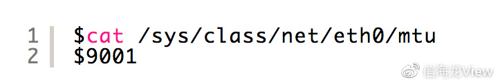
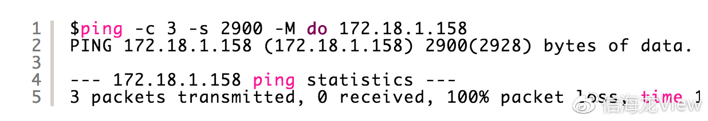
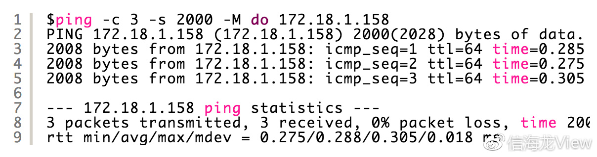
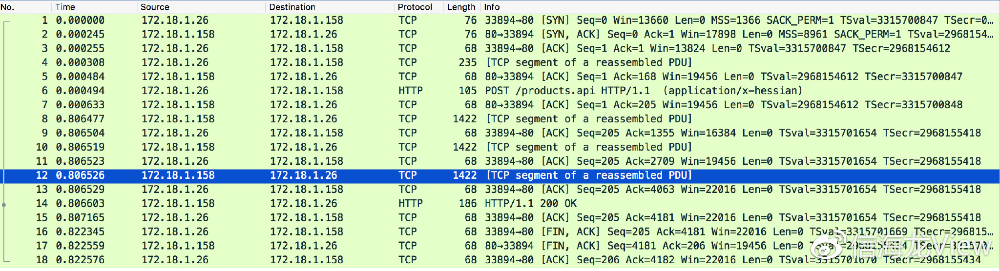

现象
Server A 调用本机的接口，能正常返回。调用Server B的接口，总是超时。被调用接口是能正常执行的，而且有执行日志记录。
Server C 调用Server B的接口也能正常返回
分析
根据以上，基本可以排除是Server B接口服务的问题导致超时。很有可能 Server A 与 Server B之间的网络有问题。抓包分析如下：
Server A 调用 Server B接口时，抓包情况如下：

可见，在调用Server B的接口时，重试很严重。见上图的黑色行。
当 MTU 值或者 MSS 值设置不合适时，会导致这样的问题出现。
首先，查看当前 MTU 的值是多少：
linux 下查看方式如下：

再看这个 MTU 值设置多少合适。使用 ping 命令检测。
-s 参数说明包的大小。Specifies the number of data bytes to be sent.
后面的 IP 可以设置为 任何一个可以 ping 通的 IP。
当返回值如下时，表示包的大小设置的过大，可以调小：

当出现如下的结果时，说明包大小设置的正常了。

解决
经过上面的 ping 测试，我们可以知道 原先的 MTU 值为 9001，设置的过大。应该改成 2000.
有多种修改的方式，下面就介绍一种。
设置完成后，再次抓包，情况如下：

可见重传消失了。
扩展
MTU && MSS
MTU: Maxitum Transmission Unit 最大传输单元
MSS: 就是TCP数据包每次能够传输的最大数据分段。为了达到最佳的传输效能TCP协议在建立连接的时候通常要协商双方的MSS值，这个值TCP协议在实现的时 候往往用MTU值代替（需要减去IP数据包包头的大小20Bytes和TCP数据段的包头20Bytes）所以往往MSS为1460。通讯双方会根据双方 提供的MSS值得最小值确定为这次连接的最大MSS值。
wireshark 中的 CP segment of a reassembled PDU
数据超出了TCP的最大MSS时，主机会通过发送多个数据包来传送 这些数据（注意：这些包并未被分片）。对wireshark来说这些对相应同一个查询命令的数据包被标记了“TCP segment of a reassembled PDU”
问题，wireshark如何识别多个数据包是对同一个查询数据包的响应? wireshark是根据sequence number来识别，这些数据包ACK number是相同的，当然number的数值与查询数据包中的next sequence number也是一样的。

- .新的Ubuntu 18.04功能包括GNOME Shell桌面，一系列更新的软件，以及对下一代开源显示器服务技术Wayland预览。自从最后一个LTS（按照字母代号排序） Ubuntu 16.04发布以来，Ubuntu的发生了很多变化。详细观看的Ubuntu 18.04 LTS视频，并获取您自己的Ubuntu 18.04下载。 Ubuntu 18.04是Ubuntu多年来最令人兴奋的版本。 长期支持版本(LTS)通常更关注保守软件细化，而不是重大更改。 传统上，这不是一件坏事，人们选择搭载LTS发布以保证持续的支持。但是“仿生海狸”并非如此。
- .面向企业的Red Hat Enterprise Linux 6.10的Beta版本于今天正式发布。RHEL 6.10的支持周期长达10年时间，在今天发布的Beta版本中重点针对系统的稳定性和安全性进行了优化，并添加了对最新硬件的支持以及诸多软件组件，并引入对下一代云应用的支持。
- . Canonical计划在本月底前（4月26日）发布Ubuntu 18.04 LTS（Bionic Beaver），意味着当前依然运行Ubuntu 16.04 LTS（Xenial Xerus）的用户可以尽快升级了。 Ubuntu 16.04 LTS（Xenial Xerus）于2016年4月21日正式发布，至今已经有两年时间了。根据路线图该分支会有5个维护版本更新，在2018年3月1日Canonical推出了4个维护版本更新，最新版本号为Ubuntu 16.04.4 LTS。 尽管Ubuntu 16.04.4 LTS使用了最新的内核和来自Ubuntu 17.10（Artful Aardvark）版本的显卡堆栈，且相比较初版带来了诸多改进，但相信大部分用户都会希望在本月升级至Ubuntu 18.04 LTS版本中。
- .2008 年，乔布斯从信封里掏出了令人惊艳的 MacBook Air，轻薄和便携使它成为了很多人移动办公的首选。而且与普通的 PC 相比，macOS 最大的优势之一是系统安全性更好，你不需要安装专门的杀毒软件，也无需担心 Windows 上的那些流氓软件的广告弹窗。因此，每次在咖啡厅掏出我的 MacBook Air 办公时，如果咖啡厅的其他人用的是 PC，一种信仰加持的优越感就会油然而生：“不是针对谁，在座的各位……”.